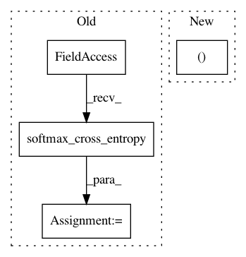

41304b258afa59f0cc47b96dbe1af9e75b2c90e3,tests/test_dqn_head.py,_TestDQNHead,test_policy,#_TestDQNHead#,92
Before Change
opt.update()
// b
pi.zerograds()
loss = F.softmax_cross_entropy(
pi.forward(b),
chainer.Variable(np.asarray([1], dtype=np.int32)))
loss.backward()
opt.update()
pa = float(pi(a, [0]).data)
After Change
opt.update()
pa = float(pi(head(a)).probs.data[0, 0])
pb = float(pi(head(b)).probs.data[0, 1])
self.assertAlmostEqual(pa, 1.0, places=3)
self.assertAlmostEqual(pb, 1.0, places=3)
In pattern: SUPERPATTERN
Frequency: 4
Non-data size: 4
Instances
Project Name: chainer/chainerrl
Commit Name: 41304b258afa59f0cc47b96dbe1af9e75b2c90e3
Time: 2016-05-04
Author: muupan@gmail.com
File Name: tests/test_dqn_head.py
Class Name: _TestDQNHead
Method Name: test_policy
Project Name: chainer/chainercv
Commit Name: 4f9cfd059cdd34df5de57d34e931165e3a8d2f0f
Time: 2017-05-28
Author: yuyuniitani@gmail.com
File Name: chainercv/links/model/faster_rcnn/faster_rcnn_train_chain.py
Class Name: FasterRCNNTrainChain
Method Name: __call__
Project Name: chainer/chainercv
Commit Name: 8b084618a0ba7d0f79275c3e5578c85b4d6d8279
Time: 2017-05-26
Author: yuyuniitani@gmail.com
File Name: chainercv/links/loss/semantic_segmentation_loss.py
Class Name: PixelwiseSoftmaxClassifier
Method Name: __call__
Project Name: IBM/adversarial-robustness-toolbox
Commit Name: 134d00c07c5f2bfb6e79811e9397e5a111635f91
Time: 2019-02-11
Author: beat.buesser@ie.ibm.com
File Name: art/attacks/spatial_transformation_unittest.py
Class Name: TestSpatialTransformation
Method Name: test_tfclassifier